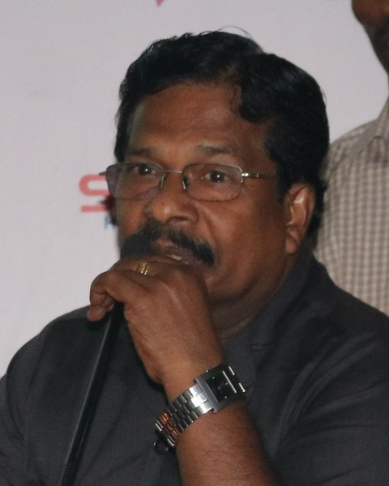
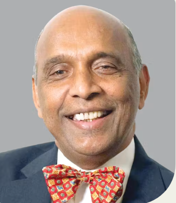
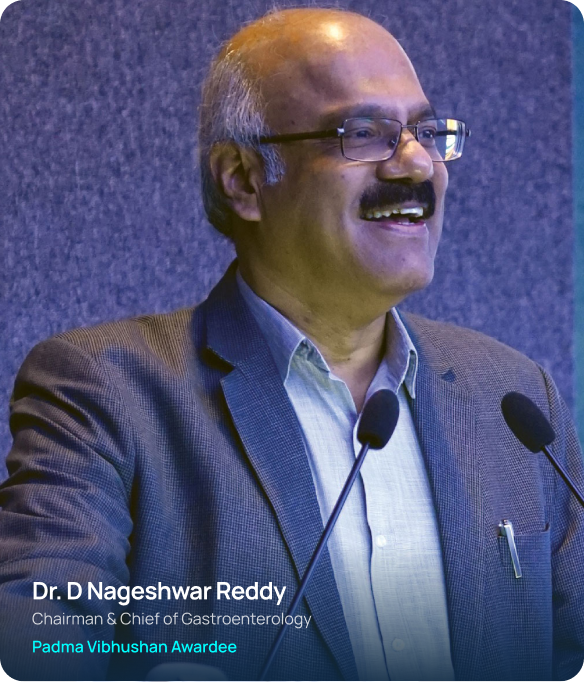

Milestones, oration editions, published research and foundation updates — the latest first.
Associate Professor of Medicine at Emory University School of Medicine and Director of its Transplant Nephrology Fellowship Program, Dr. Sudha Tata was jointly honoured by the Organizing Committee of Transplant Manthan 2025, Renown Clinical Services and CFYKF. Read the full citation →

CFYKF's community screening program has now reached over 10,026 individuals across police stations, urban slums and public camps in and around Hyderabad. See the full research & survey data →
Dr. Vivekananda Jha delivered the Dr. M.K. Mani Oration at an Annual Kidney Day that doubled as CFYKF's 15th anniversary celebration, with Dr. Tamilisai Soundarajan, then Governor of Telangana, among the distinguished guests — one of the last large gatherings CFYKF held before pandemic restrictions curtailed public events across the country.

Introduced by Mr. Narendra Paruchuri, Dr. Prabhakaran delivered the oration, with Dr. M.K. Mani offering felicitation and an address on ethics in medical practice.

Dr. G.N. Rao delivered the Dr. M.K. Mani Oration, followed by an address from Dr. M.K. Mani himself on "Ethics in Medical Practice." The event also felicitated Dr. Ravi Raju and Dr. M.A. Raoof.

Dr. D. Nageshwar Reddy delivered the Dr. M.K. Mani Honour Oration on "My Journey: Taking Gastroenterology to the Underserved," recognised for his ASGE Master Endoscopist Award, over 400 published papers, and the Padma Shri and Padma Bhushan.
Mr. Narendra Paruchuri, Dr. R. Chakravarthi, Mr. Joseph Vargeese, Mr. Jayaraj and Mr. Bhaskar Gadapally founded CFYKF, with the twin aims of increasing awareness about CKD and preventing it in the general population. Read our full story →
New camps, oration editions and research findings are added here as they happen. Reach out if you'd like to be notified directly.